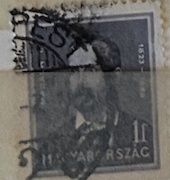
| SOURCE | TITLE| IMAGE MATCH | click to source page |
| www.ebay.com | 10f I. Szcehenyi-Famous Hungarians-Used #SG545 Hungary ... | 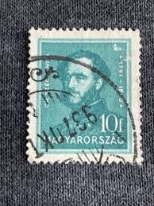 |
| www.ebay.com | Hungary stamps - Count István Széchenyi (1791-1860) 10 ... | 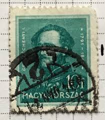 |
| www.shutterstock.com | Hungary Circa 1932 Stamp Printed By Stock Photo 90427882 ... | 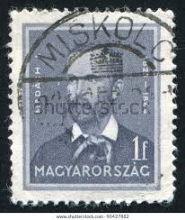 |
| www.ebay.com | HUNGARY MAGYARORSZAG 1932 FAMOUS HUNGARIANS 10F BLUE ... | 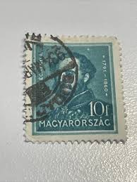 |
| www.hipstamp.com | Hungary 819 (used) 20f Ignác Martinovics, dp yel grn (1947 ... | 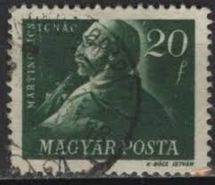 |
| www.hipstamp.com | U-Pick** Stamp Stop Box #116 Item 21 | Worldwide - Other ... | 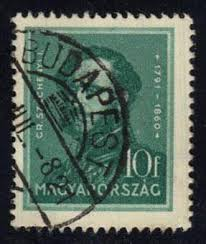 |
| www.shutterstock.com | Hungary Circa 1932 Cancelled Postage Stamp Stock Photo ... | 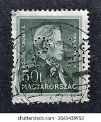 |
| www.buyhungarianstamps.com | 573-577 Hungary - Count Stephen Szechenyi (MNH) – Eastern ... | 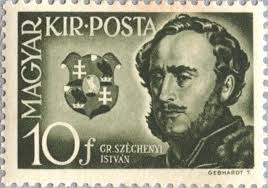 |
| www.alamy.com | HUNGARY - CIRCA 1932: stamp printed by Hungary, shows Farkas ... | 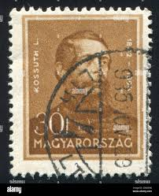 |
| www.mysticstamp.com | 490-91 - 1950 Poland - Mystic Stamp Company | 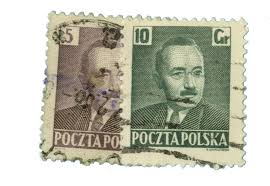 |
| www.buyhungarianstamps.com | C129-C135 Hungary - Hungarian Composers (MNH) – Eastern ... | 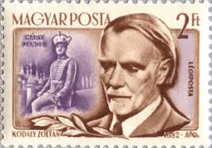 |
| www.alamy.com | HUNGARY - CIRCA 1937: stamp printed by Hungary, shows ... | 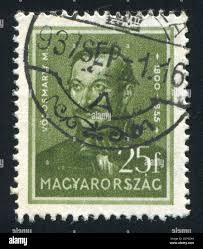 |
| www.manresa-sj.org | Peter Pázmány, SJ | 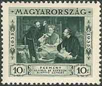 |
| www.etsy.com | 1938 Hungary Eucharistic Congress Stamp Sheet: Vintage ... | 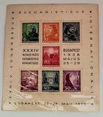 |
| www.bibleinmylanguage.com | MAGYAR KIRALYI POSTA (HUNGARIAN ROYAL POST OFFICE) / 2 ... | 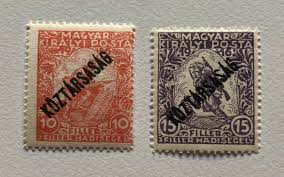 |
| www.ebay.com | Hungary, Scott 472--Count Stephen Szechenyi--1932--used | eBay | 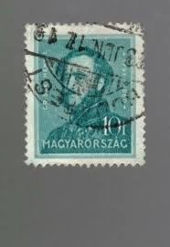 |
| www.hungarianstamps.co.uk | Hungarian Stamps - 1945 Issues under the Provisional Government | 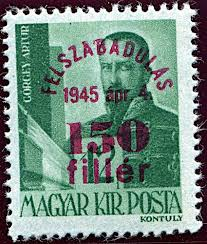 |
| www.etsy.com | Medical Pioneers on 1987 and 1989 Vintage Hungararian ... | 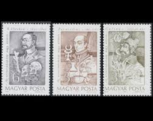 |
| www.populismstudies.org | Bio-populism - ECPS | 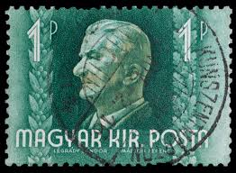 |
| www.reddit.com | Black Armband" stamp issued to symbolize mourning after the ... | 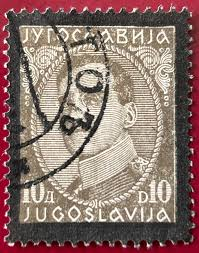 |
| www.facebook.com | 216 old postage stamps from Hungary. Interested parties welcome. | 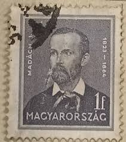 |
| stampforgeries.com | Stamp forgeries of Karlsbad | Stampforgeries of the World | 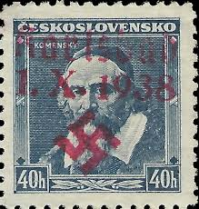 |
| www.bibleinmylanguage.com | MAGYAR KIR POSTA (Hungary Royal Postage) / GESHARDT T. / GR ... | 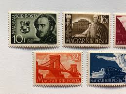 |
| www.wsj.com | Stamp Collecting's Last City Bastion - WSJ | 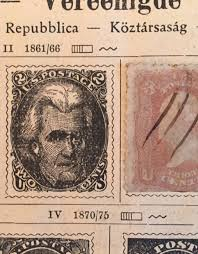 |
| welovebudapest.com | Budapest's hidden gems: the Stamp Museum - English - We love ... | 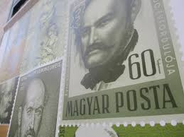 |
| www.youtube.com | RARE STAMPS WORTH MONEY,SATISFYING VIDEO STAMPS #HUNGARY ... | 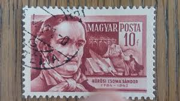 |
| worldstampsproject.org | Kingdom of Yugoslavia, commemorative and semi-postal issues ... | 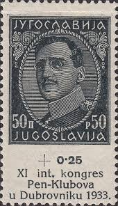 |
| www.allnumis.com | 10 filler 1940-Horthy Miklos,1920-1940, Personalities ... | 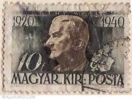 |
| www.freestampcatalogue.com | Stamps from Hungary - Freestampcatalogue.com - The free ... | 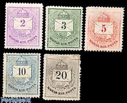 |
| www.linns.com | Tip of the week: 1912-1914 Bosnia and Herzegovina | 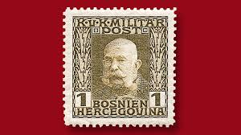 |
| atcoordinates.info | Maps in Miniature: Geography on Postage Stamps | At These ... |  |
| www.ebay.com | Yugoslavia 77 used | eBay | 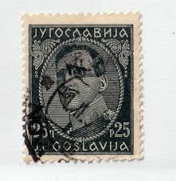 |
| www.buyhungarianstamps.com | Catalog of Hungarian Occupation Issues, 1918-1921 – Eastern ... | 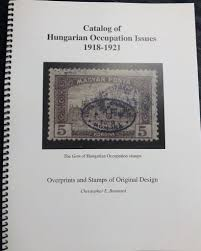 |
| www.allnumis.com | 10 Filler,1932 - Istvan Szechenyi (1791-1860),conte,scriitor ... | 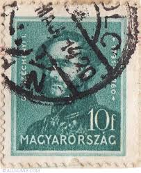 |
| www.dreamstime.com | Stamp Printed in Czechoslovakia Shows Alois Mrstik, 1861 ... | 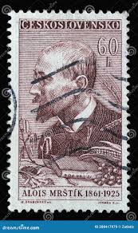 |
| worldstampsproject.org | Yugoslavia-1926-50-para-postage-stamp-plate-error-A_1 ... | 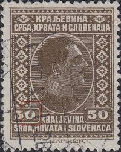 |
| www.reddit.com | Hungarian Stamp Collection : r/philately | 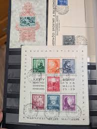 |
| www.smithsonianmag.com | Sarkozy's Not the First World Leader to Collect Stamps | 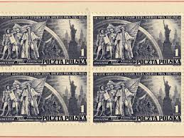 |
| rammb.cira.colostate.edu | Metric System (SI) | 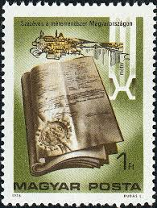 |
| stampaday.wordpress.com | Yugoslav Kingdom #5 (1921) – A Stamp A Day | 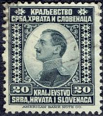 |
| www.etsy.com | 1930's/40's HUNGARY Postage Stamps Magyar Kir Posta Lot - Etsy | 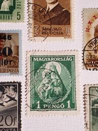 |
| www.alamy.com | Cancelled postage stamp printed by Hungary, that shows ... | 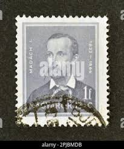 |
| hungarianstamps.co.uk | Hungarian Stamps - 1946 Issues under the Provisional Government | 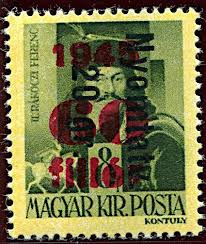 |
| www.postbeeld.com | Stamps from Yugoslavia - PostBeeld - Online Stamp Shop ... | 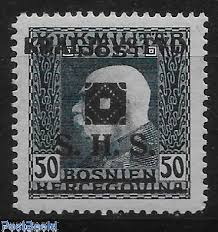 |
| www.youtube.com | How To View Old Hungarian- Magyar Postal Stamps - YouTube | 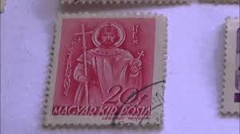 |
| commons.wikimedia.org | File:Stamp Bosnia 1917 30h.jpg - Wikimedia Commons | 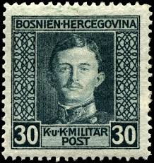 |
| www.hipstamp.com | Hungary 1932 Early Issue Fine Used 10f. 087613 | Europe ... | 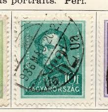 |
| www.arpinphilately.com | Buy Czechoslovakia #B88 - Czechoslovakia stamps (1917 ... | 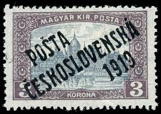 |
| www.wopa-plus.com | 150 Years of Hungarian Stamp Issuance II - Hungary-Austria ... | 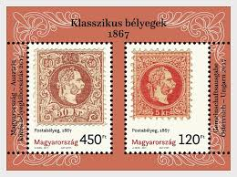 |
| www.stampcollectingblog.com | Men who changed postage stamp design forever | 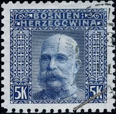 |
| www.dreamstime.com | Portrait of King Gustavus III, by a. Roslin, 150 Years ... | |
| www.mettcollection.com | Czech Republic Stamps | |
| jenikirbyhistory.getarchive.net | 17 Overprints on stamps of hungary, Hungary Images: PICRYL ... | |
| stampforgeries.com | Stamp forgeries of Hungary | Stampforgeries of the World | |
| www.bidcurios.com | Czechoslovakia (Dead Country) - Used stamp - 1957 - 15th ... | |
| mynation.net | CZECH REPUBLIC – 1925, 2K blue Thomas G. Masaryk definitive ... | |
| www.burda-auction.com | Posta Ceskoslovenska 1919 Overprint Issue / Czechoslovakia ... | |
| www.libraryhistorybuff.com | Libraries | |
| www.allstamp.net | AU 380, 10 Shilling Engelbert Dollfuss: Allstamp.net | |
| www.linns.com | Marx leads stamp trio on 1919 Hungarian Soviet Republic cover |
{kind=link}